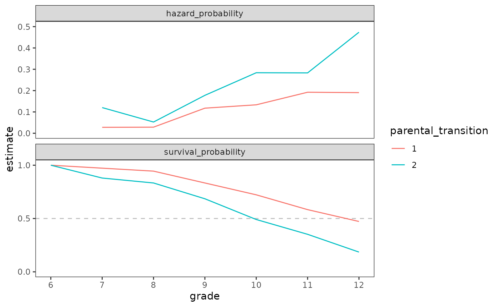
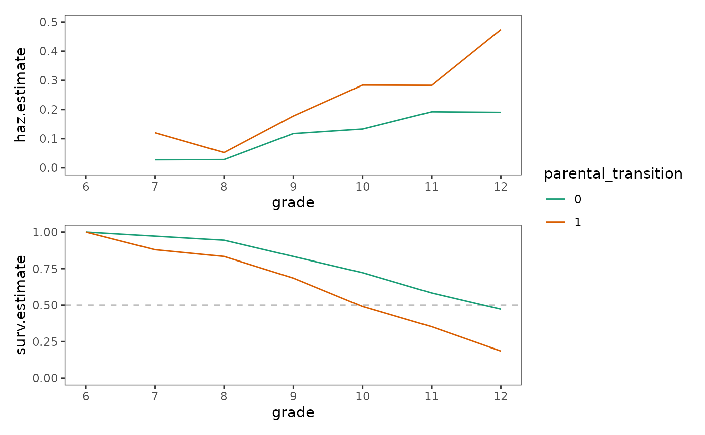
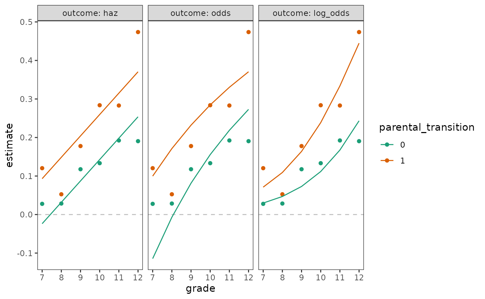
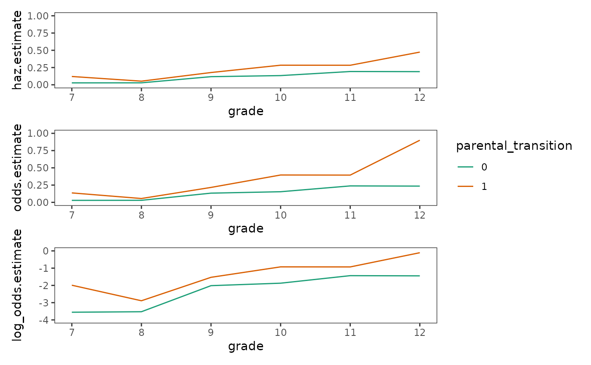
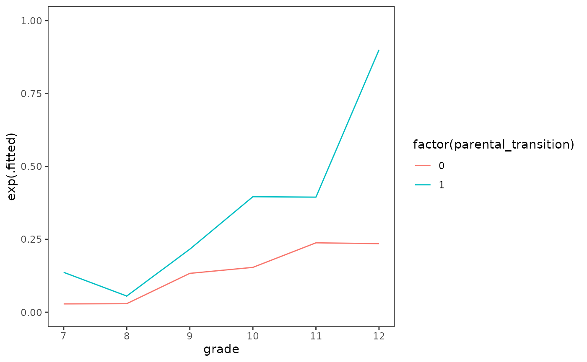
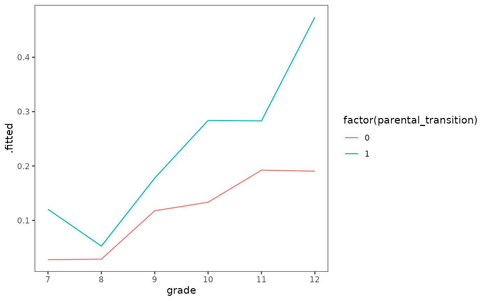
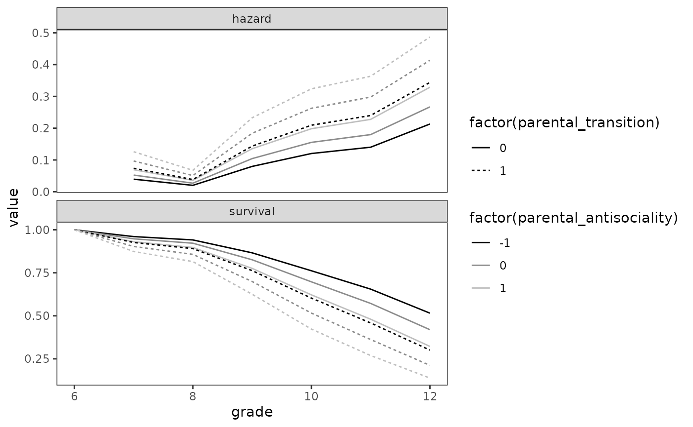

Chapter 11: Fitting basic discrete-time hazard models
Source:vignettes/articles/chapter-11.Rmd
chapter-11.RmdThis chapter is under construction.
library(alda)
library(dplyr)
#>
#> Attaching package: 'dplyr'
#> The following objects are masked from 'package:stats':
#>
#> filter, lag
#> The following objects are masked from 'package:base':
#>
#> intersect, setdiff, setequal, union
library(tidyr)
library(purrr)
library(ggplot2)
library(survival)
library(broom)11.1 Toward a Statistical Model for DiscreteTime Hazard
Several examples in this chapter rely on the following:
first_sex_fit <- survfit(Surv(grade, 1 - censor) ~ 1, data = first_sex)
first_sex_pt <- c(0, 1) |>
map_dfr(
\(.x) {
first_sex_fit_subset <- update(
first_sex_fit, subset = (parental_transition == .x)
)
first_sex_fit_subset |>
survfit0(start.time = 6) |>
tidy() |>
rename(survival_probability = estimate) |>
mutate(
hazard_probability = n.event / n.risk,
odds = hazard_probability / (1 - hazard_probability),
log_odds = log(odds)
) |>
select(-starts_with("conf"), -std.error) |>
rename(grade = time) |>
pivot_longer(
cols = c(survival_probability, hazard_probability, odds, log_odds),
values_to = "estimate"
) |>
# The figure doesn't include data for grade 6 in the hazard function.
filter(
!(name %in% c("hazard_probability", "odds", "log_odds") & grade == 6)
)
},
.id = "parental_transition"
)Figure 11.1, page 359:
first_sex_pt |>
filter(name %in% c("survival_probability", "hazard_probability")) |>
ggplot(aes(x = grade, y = estimate, colour = parental_transition)) +
geom_hline(
aes(yintercept = .5),
data = tibble(name = "survival_probability"),
alpha = .25,
linetype = 2
) +
geom_line() +
scale_x_continuous(breaks = 6:12) +
coord_cartesian(xlim = c(6, 12)) +
facet_wrap(vars(name), ncol = 1, scales = "free_y") +
ggh4x::facetted_pos_scales(
y = list(
name == "hazard_probability" ~ scale_y_continuous(limits = c(0, .5)),
name == "survival_probability" ~
scale_y_continuous(breaks = c(0, .5, 1), limits = c(0, 1))
)
)
Table 11.1, page 360:
# First two sections of the table
first_sex_pt |>
filter(grade != 6, !(name %in% c("odds", "log_odds"))) |>
pivot_wider(names_from = name, values_from = estimate) |>
select(everything(), -n.censor, hazard_probability, survival_probability)
#> # A tibble: 12 × 6
#> parental_transition grade n.risk n.event survival_probability
#> <chr> <dbl> <dbl> <dbl> <dbl>
#> 1 1 7 72 2 0.972
#> 2 1 8 70 2 0.944
#> 3 1 9 68 8 0.833
#> 4 1 10 60 8 0.722
#> 5 1 11 52 10 0.583
#> 6 1 12 42 8 0.472
#> 7 2 7 108 13 0.880
#> 8 2 8 95 5 0.833
#> 9 2 9 90 16 0.685
#> 10 2 10 74 21 0.491
#> 11 2 11 53 15 0.352
#> 12 2 12 38 18 0.185
#> # ℹ 1 more variable: hazard_probability <dbl>
# Last section
first_sex_fit |>
tidy() |>
rename(survival_probability = estimate) |>
mutate(
hazard_probability = n.event / n.risk,
.before = survival_probability
) |>
select(-starts_with("conf"), -std.error, -n.censor) |>
rename(grade = time)
#> # A tibble: 6 × 5
#> grade n.risk n.event hazard_probability survival_probability
#> <dbl> <dbl> <dbl> <dbl> <dbl>
#> 1 7 180 15 0.0833 0.917
#> 2 8 165 7 0.0424 0.878
#> 3 9 158 24 0.152 0.744
#> 4 10 134 29 0.216 0.583
#> 5 11 105 25 0.238 0.444
#> 6 12 80 26 0.325 0.3Figure 11.2, page 363:
first_sex_pt |>
filter(name %in% c("hazard_probability", "odds", "log_odds")) |>
mutate(
name = factor(name, levels = c("hazard_probability", "odds", "log_odds"))
) |>
ggplot(aes(x = grade, y = estimate, colour = parental_transition)) +
geom_line() +
scale_x_continuous(breaks = 6:12) +
coord_cartesian(xlim = c(6, 12)) +
facet_wrap(vars(name), ncol = 1, scales = "free_y") +
ggh4x::facetted_pos_scales(
y = list(
name %in% c("hazard_probability", "odds") ~
scale_y_continuous(limits = c(0, 1)),
name == "log_odds" ~ scale_y_continuous(limits = c(-4, 0))
)
)
Figure 11.3, page 366:
# Transform to person-period format.
first_sex_pp <- first_sex |>
rename(grades = grade) |>
reframe(
grade = 7:max(grades),
event = if_else(grade == grades & censor == 0, 1, 0),
parental_transition,
parental_antisociality,
.by = id
)
# Fit models for each panel.
first_sex_fit_11.3a <- glm(
event ~ parental_transition, family = "binomial", data = first_sex_pp
)
first_sex_fit_11.3b <- update(first_sex_fit_11.3a, . ~ . + grade)
first_sex_fit_11.3c <- update(first_sex_fit_11.3a, . ~ . + factor(grade))
# Plot:
map_df(
list(a = first_sex_fit_11.3a, b = first_sex_fit_11.3b, c = first_sex_fit_11.3c),
\(.x) augment(.x, newdata = first_sex_pp),
.id = "model"
) |>
ggplot(aes(x = grade, y = .fitted, colour = factor(parental_transition))) +
geom_line() +
geom_point(
aes(y = estimate),
data = first_sex_pt |>
mutate(parental_transition = as.numeric(parental_transition) - 1) |>
filter(name == "log_odds")
) +
coord_cartesian(ylim = c(-4, 0)) +
facet_wrap(vars(model), ncol = 1, labeller = label_both) +
labs(
y = "logit(hazard)",
colour = "parental_transition"
)
11.2 A Formal Representation of the Population Discrete-Time Hazard Model
Figure 11.4, page 374:
# Panel A:
first_sex_fit_11.3c |>
augment(newdata = first_sex_pp) |>
ggplot(aes(x = grade, y = .fitted, colour = factor(parental_transition))) +
geom_line() +
coord_cartesian(ylim = c(-4, 0))
# Panel B:
first_sex_fit_11.4b <- update(
first_sex_fit_11.3c,
. ~ . + parental_transition * factor(grade)
)
first_sex_fit_11.4b |>
augment(newdata = first_sex_pp) |>
ggplot(aes(x = grade, y = exp(.fitted), colour = factor(parental_transition))) +
geom_line() +
coord_cartesian(ylim = c(0, 1))
# Panel C:
first_sex_fit_11.4b |>
augment(newdata = first_sex_pp, type.predict = "response") |>
ggplot(aes(x = grade, y = .fitted, colour = factor(parental_transition))) +
geom_line()
11.3 Fitting a Discrete-Time Hazard Model to Data
Figure 11.5:
Table 11.3, page 386:
model_A <- glm(
event ~ factor(grade) - 1, family = "binomial", data = first_sex_pp
)
model_B <- update(model_A, . ~ . + parental_transition)
model_C <- update(model_A, . ~ . + parental_antisociality)
model_D <- update(model_B, . ~ . + parental_antisociality)
anova(model_B)
#> Analysis of Deviance Table
#>
#> Model: binomial, link: logit
#>
#> Response: event
#>
#> Terms added sequentially (first to last)
#>
#>
#> Df Deviance Resid. Df Resid. Dev Pr(>Chi)
#> NULL 822 1139.53
#> factor(grade) 6 487.58 816 651.96 < 2.2e-16 ***
#> parental_transition 1 17.29 815 634.66 3.203e-05 ***
#> ---
#> Signif. codes: 0 '***' 0.001 '**' 0.01 '*' 0.05 '.' 0.1 ' ' 1
anova(model_C)
#> Analysis of Deviance Table
#>
#> Model: binomial, link: logit
#>
#> Response: event
#>
#> Terms added sequentially (first to last)
#>
#>
#> Df Deviance Resid. Df Resid. Dev Pr(>Chi)
#> NULL 822 1139.53
#> factor(grade) 6 487.58 816 651.96 < 2.2e-16 ***
#> parental_antisociality 1 14.79 815 637.17 0.0001204 ***
#> ---
#> Signif. codes: 0 '***' 0.001 '**' 0.01 '*' 0.05 '.' 0.1 ' ' 1
# Deviance tests are sequential so the order of terms matters. To test
# parental_transition and parental_antisociality, the model needs to be
# fit twice, once with each as the last term.
anova(update(model_C, . ~ . + parental_transition))
#> Analysis of Deviance Table
#>
#> Model: binomial, link: logit
#>
#> Response: event
#>
#> Terms added sequentially (first to last)
#>
#>
#> Df Deviance Resid. Df Resid. Dev Pr(>Chi)
#> NULL 822 1139.53
#> factor(grade) 6 487.58 816 651.96 < 2.2e-16 ***
#> parental_antisociality 1 14.79 815 637.17 0.0001204 ***
#> parental_transition 1 8.02 814 629.15 0.0046222 **
#> ---
#> Signif. codes: 0 '***' 0.001 '**' 0.01 '*' 0.05 '.' 0.1 ' ' 1
anova(model_D)
#> Analysis of Deviance Table
#>
#> Model: binomial, link: logit
#>
#> Response: event
#>
#> Terms added sequentially (first to last)
#>
#>
#> Df Deviance Resid. Df Resid. Dev Pr(>Chi)
#> NULL 822 1139.53
#> factor(grade) 6 487.58 816 651.96 < 2.2e-16 ***
#> parental_transition 1 17.29 815 634.66 3.203e-05 ***
#> parental_antisociality 1 5.51 814 629.15 0.01886 *
#> ---
#> Signif. codes: 0 '***' 0.001 '**' 0.01 '*' 0.05 '.' 0.1 ' ' 111.4 Interpreting Parameter Estimates
Table 11.4, page 388:
model_A |>
tidy() |>
select(term, estimate) |>
mutate(
odds = exp(estimate),
hazard = 1 / (1 + exp(-estimate))
)
#> # A tibble: 6 × 4
#> term estimate odds hazard
#> <chr> <dbl> <dbl> <dbl>
#> 1 factor(grade)7 -2.40 0.0909 0.0833
#> 2 factor(grade)8 -3.12 0.0443 0.0424
#> 3 factor(grade)9 -1.72 0.179 0.152
#> 4 factor(grade)10 -1.29 0.276 0.216
#> 5 factor(grade)11 -1.16 0.313 0.238
#> 6 factor(grade)12 -0.731 0.481 0.32511.5 Displaying Fitted Hazard and Survivor Functions
Table 11.5, page 392:
model_B_tidy <- model_B |>
augment(
newdata = expand_grid(grade = 7:12, parental_transition = 0:1)
) |>
mutate(
hazard = 1 / (1 + exp(-.fitted)),
survival = cumprod(1 - hazard),
.by = parental_transition
)
model_B_tidy
#> # A tibble: 12 × 5
#> grade parental_transition .fitted hazard survival
#> <int> <int> <dbl> <dbl> <dbl>
#> 1 7 0 -2.99 0.0477 0.952
#> 2 7 1 -2.12 0.107 0.893
#> 3 8 0 -3.70 0.0241 0.929
#> 4 8 1 -2.83 0.0559 0.843
#> 5 9 0 -2.28 0.0927 0.843
#> 6 9 1 -1.41 0.197 0.677
#> 7 10 0 -1.82 0.139 0.726
#> 8 10 1 -0.949 0.279 0.488
#> 9 11 0 -1.65 0.161 0.609
#> 10 11 1 -0.781 0.314 0.335
#> 11 12 0 -1.18 0.235 0.466
#> 12 12 1 -0.305 0.424 0.193Figure 11.6, page 393:
# FIXME: should use survfit0() for the survival panel so time starts at 6.
model_B_tidy |>
pivot_longer(cols = .fitted:survival) |>
ggplot(aes(x = grade, y = value, colour = factor(parental_transition))) +
geom_line() +
facet_wrap(vars(name), ncol = 1, scales = "free_y")
Figure 11.7, page 395:
prototypical_males <- tibble(
id = rep(1:6, times = length(7:12)),
expand_grid(
grade = 7:12,
parental_transition = c(0, 1),
parental_antisociality = -1:1
)
)
prototypical_first_sex <- tibble(
log_odds = predict(
model_D,
prototypical_males
),
hazard = 1 / (1 + exp(-log_odds))
)
grade_six <- tibble(
id = 1:6,
grade = 6,
expand_grid(
parental_transition = c(0, 1),
parental_antisociality = -1:1
),
log_odds = NA,
hazard = NA,
survival = 1
)
prototypical_males |>
bind_cols(prototypical_first_sex) |>
mutate(survival = cumprod(1 - hazard), .by = id) |>
add_row(grade_six) |>
pivot_longer(cols = c(hazard, survival)) |>
ggplot(aes(x = grade, y = value, group = id)) +
geom_line(
aes(
colour = factor(parental_antisociality),
linetype = factor(parental_transition)
)
) +
scale_colour_grey(start = 0, end = 0.75) +
facet_wrap(
vars(name),
ncol = 1,
scales = "free_y"
)
#> Warning: Removed 6 rows containing missing values or values outside the scale range
#> (`geom_line()`).